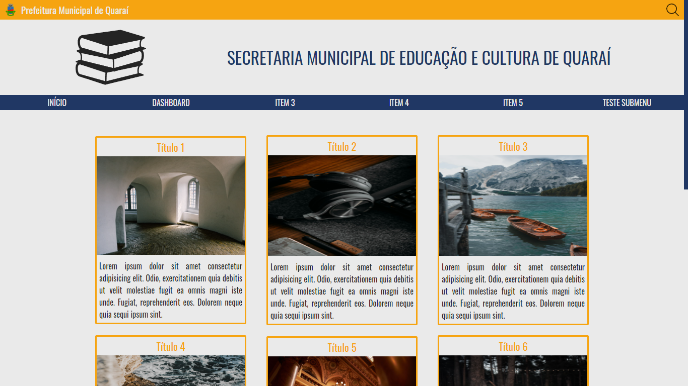
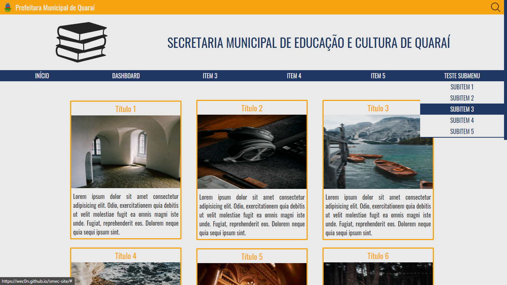
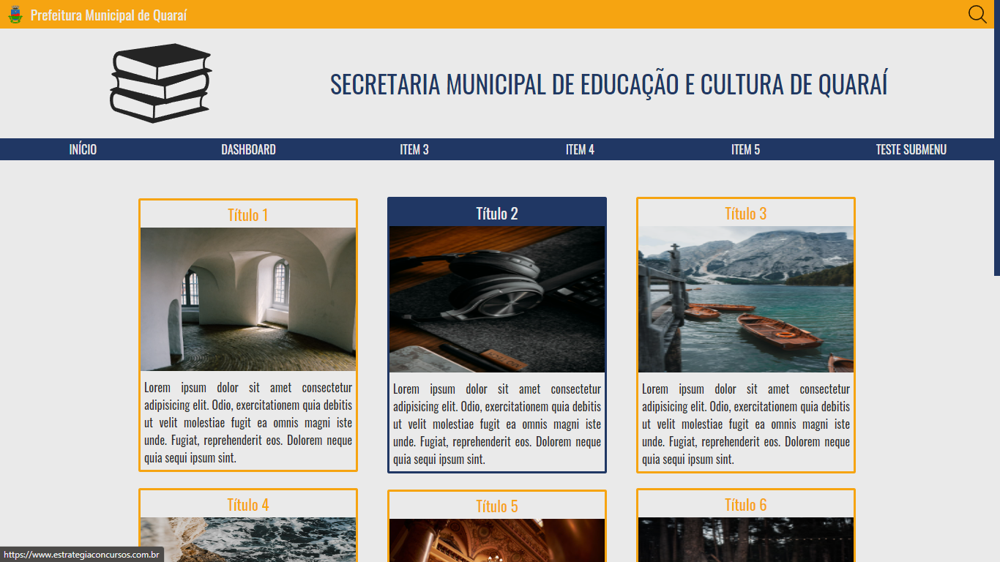
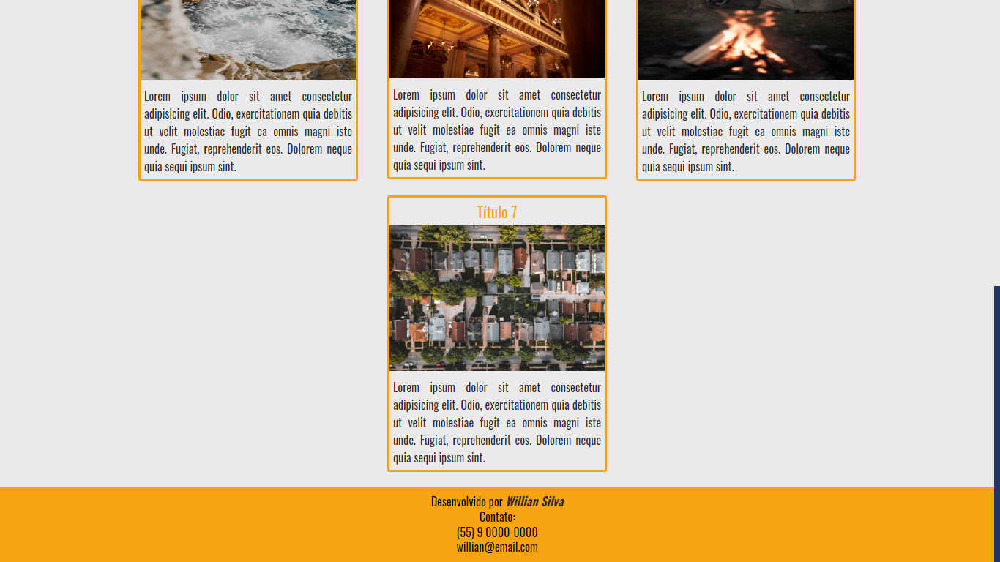
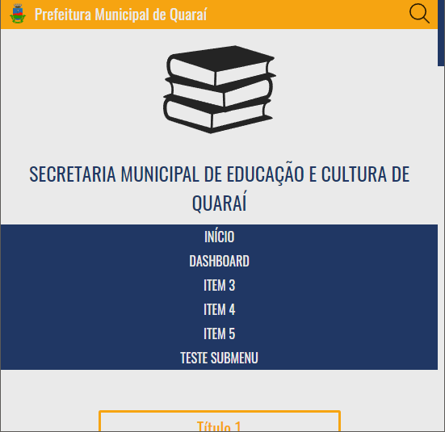
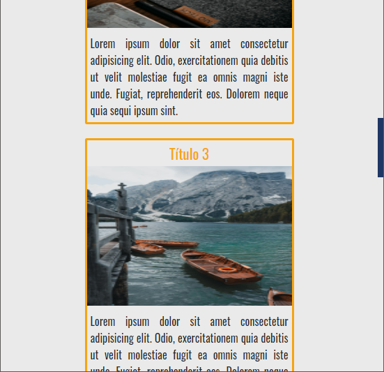

Site institucional de Secretaria Municipal de Educação e Cultura






Site construído em HTML, CSS.
Site de modelo para fazer parte do meu portifólio.
Sendo um site institucional governamental, o foco é em postagens.
O destaque do site é o menu horizontal, que possui um submenu para cada item, apresentado verticalmente.